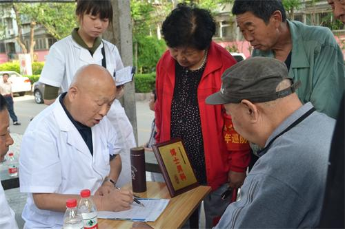
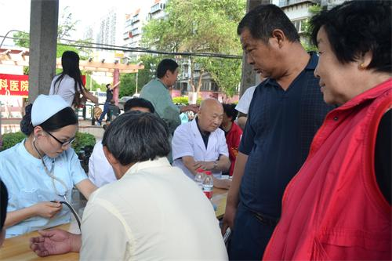
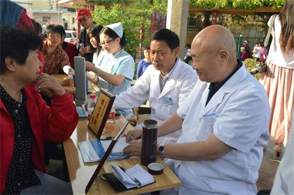

6月感恩父亲节 济南九龙送健康
2015-10-09 17:28:00来源：大众网作者：
每年6月的第三个星期日是父亲节，是一年中感谢父亲的节日。父爱如山，坚强的父亲给儿女的爱是沉稳的，而为儿女一手撑起一片天的父亲，他们对儿女从来没有什么奢求。“一生要强的爸爸，我能为你做些什么？微不足道的关心收下吧！”一曲《父亲》唱进了每位儿女的心。

父亲进入中年后，生理机能和免疫功能逐渐下降，越来越多的人开始关注到父亲的健康，但在高血压，高血脂，高血糖，风湿，心脏病等疾病之外，却很少有人注意到前列腺疾病，特别是前列腺癌对曾经强壮的父亲的折磨。
前列腺癌大多数表现为排尿费力、射程短、尿流缓慢、尿流中断、尿后滴沥，以及尿频、尿急、夜尿增多、甚至尿失禁等，类似于前列腺增生症状。还有的前列腺癌患者在早期可能没有任何症状，因此极容易被忽视。

当前宣传使大众对前列腺炎、前列腺增生比较了解，不少人按广告自行服药，更在一定程度上降低了对前列腺癌诊断的准确率，等到出现腰痛和睾丸疼痛，或肿瘤发生转移，就已错过了最佳治疗时机。
前列腺癌是全球第六大恶性肿瘤，近20年来，我国前列腺癌发病率正在接近欧美国家。不过，我国的前列腺癌病人普遍发现得晚，原因就是缺少前列腺健康体检。“人老了，每天晚上都要起来尿四五次，真不方便。”“也不知怎么搞的，最近总是腰酸背疼，排尿还老不顺畅，总有尿不尽的感觉。”……有心的儿女，你们是否注意到自己父亲已经出现了以上状况？专家提醒：千万莫大意，很可能就是前列腺癌作祟。由于前列腺位置较隐蔽，做专科的前列腺癌体检筛查对男性非常重要。

在父亲节即将来临之际，济南九龙泌尿专科医院博士男科推出“关爱男性健康，从前列腺开始”义诊活动，6月20日上午10时，济南九龙泌尿专科医院将在该院门诊大楼开展男性健康的大型义诊活动，为男性同胞献上最好的父亲节礼物。
有什么比父亲的健康更重要的呢？孝顺的儿女们，快给父亲送去一份健康的“礼物”吧！